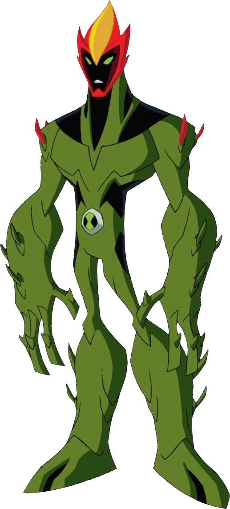
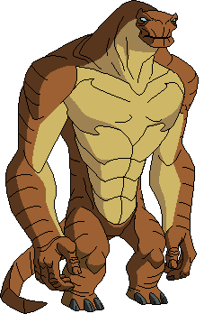
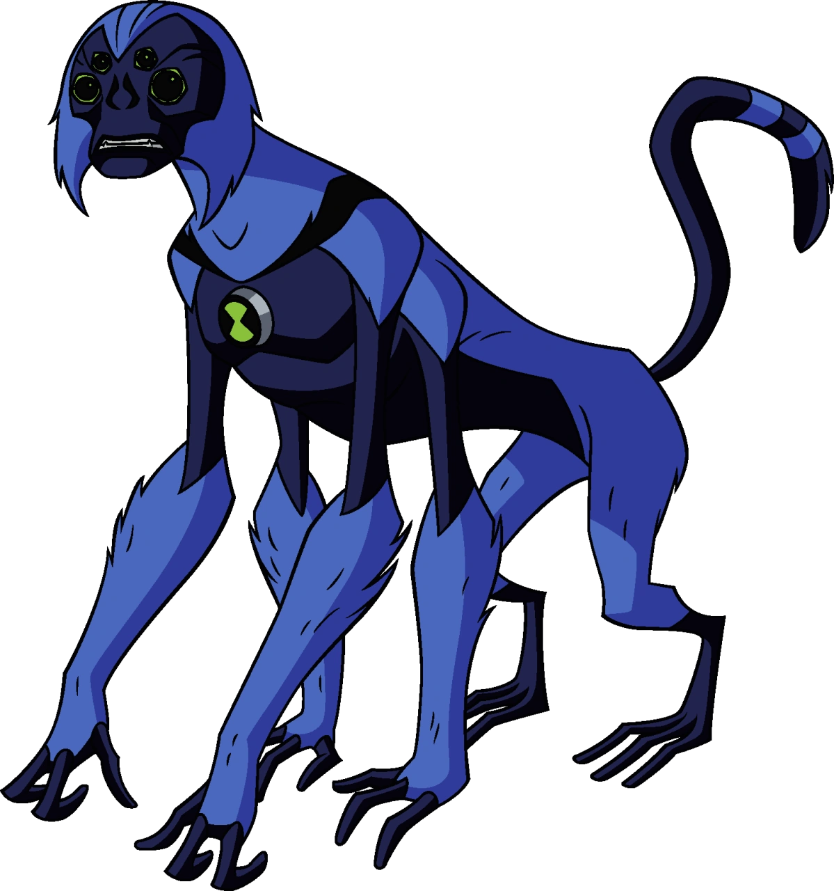
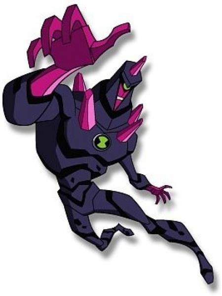

Ben 10

เบ็นเท็น(Ben10) โดยที่เรื่องราวของเบ็นเท็น เริ่มจากตัวเอกของเรื่อง เบ็นจามิน "เบ็น" เทนนีย์สัน หรือเบ็น ขณะกำลังหยุดฤดูร้อนกลางป่า เขาได้บังเอิญไปเจอกับดาวตก ซึ่งเมื่อเขาเข้าไปดูก็พบว่ามันเป็นกระสวยจากอวกาศที่ตกลงมาบนโลก ข้างในนั้นบรรจุออมนิทริกซ์ ซึ่งเป็นกำไลข้อมือที่จู่ๆก็กระโดดเข้ามาติดแขนของเขาแบบไม่ยอมปล่อย ซึ่งออมนิทริกซ์นั้นมีพลังให้เบ็นสามารถเปลี่ยนร่างเป็นสิ่งมีชีวิตต่างดาวได้ถึง 10 แบบ ซึ่งแต่ละร่างจะมีลักษณะและพลังที่ต่างกันออกไป เบ็นได้ตัดสินใจใช้พลังที่เขาได้รับนี้ในการปกป้องผู้คนจากเหล่าร้ายมากหน้าหลายตา ตั้งแต่สัตวแพทย์สติเฟื่อง จอมเวทย์ จนไปถึงผู้ควบคุมแมลง หรือเหล่ามนุษย์ต่างดาวในอวกาศที่มาวุ่นวายบนโลก
ในขณะเดียวกันก็มีมนุษย์ต่างดาวนามวิวแก็กซ์วางแผนจะชิงออมนิทริกซ์เช่นกัน เบ็นจึงต้องปกป้องโลกทั้งจากวายร้ายบนโลกและวายร้ายจากนอกโลก
อ่านต่อ>
ตัวละครเอเลี่ยนในเรื่อง Ben 10
- SWAMPFIRE (สวามไฟเออร์)

- HUMONGAUSAUR (ฮิวมงกาซอร์)

- ECHO ECHO (เอ๊คโค่ เอ็คโค่)

- BIG CHILL (บิ๊ก เชลล์)

- SPIDERMONKEY (สไปเดอร์ มังกี้)

- CHROMASTONE (โครม่าสโตน)

- ALIEN X (เอ็กซ์)

เพิ่มเติม